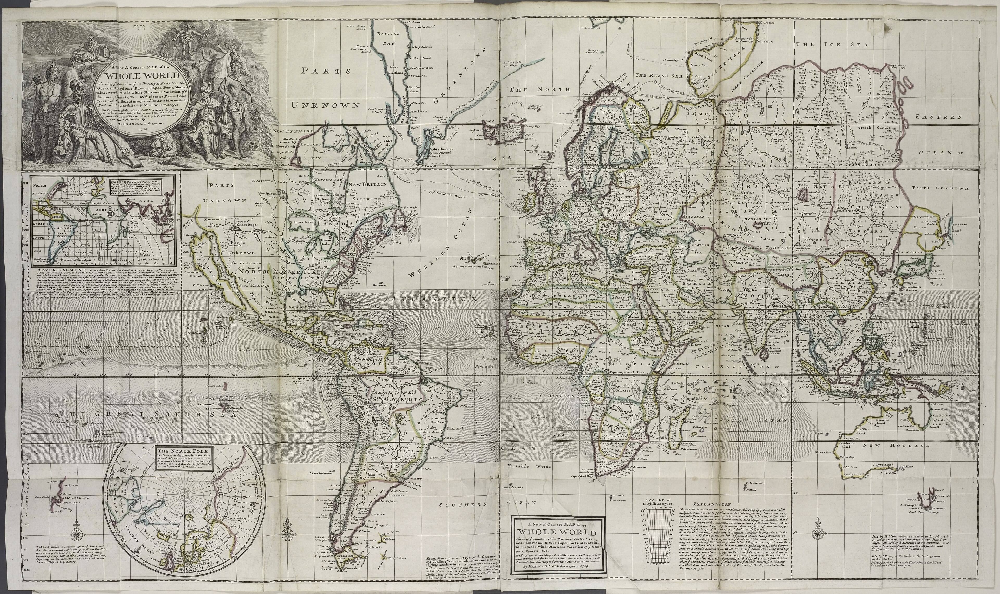

Rig your Analysis Card
One sheet, folded like a book. Cover: your name, "Day 3," the date. Inside, write these four field labels — leave room under each:
Three of these — the mapmaker, whose eyes, and the argument — are your exit ticket today. This is a real historian's tool: you're not just looking at the map, you're cross-examining it.
Something's Wrong
This is Herman Moll's "New & Correct Map of the Whole World," 1719 — as new and correct as maps got. Except…

Open the FULL map →Zoom: Ctrl + scroll (or pinch). Bonus: the library mega-scan — huge, can be slow.
Detective hunt — find what's wrong to modern eyes:
- Look at California, very closely. What did Moll do to it?
- Find the words "PARTS UNKNOWN." Now find them again, somewhere else. How many can you spot?
- Bottom-right: find the continent that just… stops, like the artist put the pen down.
- What does Moll call the Pacific Ocean? (Hint: it's huge, bottom-left.)
Sharp-eyes bonus: find the round inset map of the North Pole — a big circle labeled "THE NORTH POLE," bottom-left, below the tip of South America. Why would Moll draw the pole separately instead of on the main map? (Day-2 clue: what does Mercator do to the top and bottom of the world?)
Big idea: these aren't just goofs. They're what people in 1719 believed — and what they wanted to believe. Hold that for Mission 3.
Whose Voyages?
Moll almost never crossed an ocean himself. So how did he draw far-off coasts? He built his maps from the voyages of people who HAD been there — sailors, explorers, buccaneers and privateers. (A privateer = a pirate with a government license.) Their hard-won knowledge of coasts and currents had a name: intelligence.
- Read the fancy title box (top-left). It brags about "the most Remarkable Tracks" — find a voyage track drawn across an ocean. (One even names a captain and a year.)
- The oceans are full of tiny arrows, with labels like "Trade Winds." What do they show — and why would a sailor pay for that? (Day-2 clue: what powered every ship in 1719?)
- Day-2 callback: this map is on Mercator. So a straight track across the sea is a — what? (You learned the word yesterday.)
The Argument
Yesterday you proved every map chooses. Today's map isn't just choosing — it's arguing. Find the argument.
- Hunt for names starting with "New" — find at least two. Who's doing the naming? Who already lived there?
- "PARTS UNKNOWN" doesn't mean empty. Unknown to whom?
- Study the title-box artwork (top-left): who's sitting comfortably? Who's standing, working, kneeling? Art like this is never an accident.
On your feet: when Mr. Howe calls for it, walk up and write your one sentence on the board. Every crew's claim goes up.
Talk with your first mate: who would pay for a map like this in 1719 — and what did they want it to say?
The Whydah's World
Moll drew this two years after our ship went down. Her whole world is on it — if you know where to look. Find the three places:
- GUINEA — the West African coast she was built to sail to, to buy enslaved people. (She's named for a port there: Ouidah.)
- The Caribbean — where she delivered them, and where Bellamy's pirates later captured her.
- New England — not a stop on the slave route. It's only where the pirates sailed her afterward, and where she wrecked and still lies (yesterday's live-cam water).
Quiet Water: the reflection
On the back of your Analysis Card, write (or draw) your answer:
"If the 1719 map is an argument —
what argument is it making, and who is making it?"
Moll, who drew it? The pirates, who fed him the information? The empire, who bought it? There's a real case for each. Make yours.
cartographer = a mapmaker · empire = one country ruling lands and people far away · intelligence = secret, valuable information · argument = a claim a map (or anything) is trying to prove